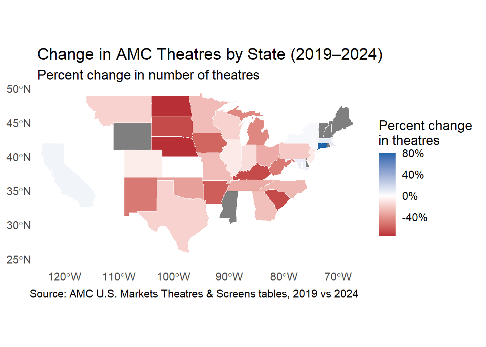

We look at how the movie industry is performing from three perspectives and found the following:
Moviegoing pattern has shifted since the pandemic. Box office revenues, number of releases, and number of theatres in the U.S. all remain below pre-COVID levels.
Compared with major market sectors, the movie industry’s recovery has been less consistent. It performed well from late 2020 through 2022, but after 2022 the movie industry’s stock price plunges and still falls behind most other sectors to this date.
Performance of sub-industries within the movie industry differ. Theater sub-industry is the most volatile.
3.1 How Moviegoing in the U.S. Has Shifted Since the Pandemic
3.1.1 Chart 1. U.S. Theatrical Box Office Revenue by Year
In 2020, box office revenue plunged from about $11B to just over $2B. Although it has rebounded to roughly $8B, it still hasn’t returned to its pre-pandemic peak and instead seems to be leveled off at a lower range, suggesting that the movie industry may now be structurally smaller than it was before COVID.
3.1.2 Chart 2. Number of Theatrical Releases per Year
Code
## Chart 2: Number of releasesggplot(box_office, aes(Year, Releases)) +geom_col(fill ="#4C72B0") +scale_x_continuous(breaks =2015:2024,minor_breaks =NULL,expand =expansion(mult =c(0.01, 0.01)) ) +labs(title ="Number of Theatrical Releases per Year",subtitle ="Industry output remains lower than pre-COVID",x ="Year",y ="Number of Releases" ) +theme_minimal(base_size =16) +theme(panel.background =element_rect(fill ="white", color =NA),plot.background =element_rect(fill ="white", color =NA),panel.grid.minor =element_blank() )
Similar to Chart 1, the number of theatrical releases dropped sharply in 2020 and remained below pre-pandemic levels. This indicates that studios have reduced their annual output, releasing fewer films than before—likely reflecting shifts in production and distribution strategies.
3.1.3 Chart 3. Change in AMC Theatres by State (2019–2024)
Based on Chart 1 and Chart 2, box office revenue and the number of releases are both lower than before the pandemic. To understand why, it helps to look at the number of theatres.
Code
message =FALSEwarning =FALSE## 1. Read AMC tables -------------------------------------------------------amc_2019 <-read_excel("data/AMC_theatres_screens_by_market_2019.xlsx",sheet =1) |>rename(state =`U.S. Markets`,theatres = Theatres,screens = Screens ) |>mutate(state =str_trim(state))amc_2024 <-read_excel("data/AMC_theatres_screens_by_market_2024.xlsx",sheet =1) |>rename(state =`U.S. Markets`,theatres = Theatres,screens = Screens ) |>mutate(state =str_trim(state))## 2. Read shapefile + keep only contiguous U.S. ---------------------------states_sf <-suppressMessages(st_read("data/cb_2018_us_state_20m/cb_2018_us_state_20m.shp", quiet =TRUE))states_sf_conus <- states_sf |>filter(!STUSPS %in%c("AK", "HI", "PR", "GU", "VI", "AS", "MP")) |>mutate(state = NAME)# vector of valid state names (lower 48 + DC)valid_states <- states_sf_conus$state## 3. Filter AMC tables to states in shapefile -----------------------------amc_2019_clean <- amc_2019 |>filter(state %in% valid_states)amc_2024_clean <- amc_2024 |>filter(state %in% valid_states)## 4. Compute changes ------------------------------------------------------state_changes <- amc_2019_clean |>select( state,theatres_2019 = theatres,screens_2019 = screens ) |>inner_join( amc_2024_clean |>select( state,theatres_2024 = theatres,screens_2024 = screens ),by ="state" ) |>mutate(theatres_change = theatres_2024 - theatres_2019,theatres_pct_change = (theatres_2024 - theatres_2019) / theatres_2019,screens_change = screens_2024 - screens_2019,screens_pct_change = (screens_2024 - screens_2019) / screens_2019 )# Which states from the shapefile are missing change data?missing_states <- states_sf_conus |>st_drop_geometry() |>anti_join(state_changes, by ="state") |>select(STUSPS, state)## 5. Join back to shapefile for mapping -----------------------------------map_data <- states_sf_conus |>left_join(state_changes, by ="state")
Code
library(scales)# Symmetric limits around zero for the diverging scalelim <-max(abs(map_data$theatres_pct_change), na.rm =TRUE)library(scales)lim <-max(abs(map_data$theatres_pct_change), na.rm =TRUE)ggplot(map_data) +geom_sf(aes(fill = theatres_pct_change),colour ="white",linewidth =0.2 ) +coord_sf(xlim =c(-125, -66),ylim =c(24, 50),expand =FALSE ) +scale_fill_gradient2(name ="Percent change\nin theatres",labels =percent_format(accuracy =1),limits =c(-lim, lim),low ="#b2182b",mid ="#f0f0f0",high ="#2166ac",midpoint =0,na.value ="grey50" ) +labs(title ="Percent change in AMC Theatres by State (2019–2024)",subtitle ="(Light grey = no change; dark grey = no AMC theatres)",caption ="Source: AMC U.S. Markets Theatres & Screens tables, 2019 vs 2024" ) +theme_minimal(base_size =14) +theme(panel.grid =element_blank(),axis.title =element_blank(),plot.title.position ="plot",plot.title =element_text(hjust =0, margin =margin(b =10) ),plot.subtitle =element_text(hjust =0,margin =margin(b =18) ),plot.margin =margin(t =25, r =15,b =15,l =15 ) )

Across most of the country, AMC has closed more theatres than it opened between 2019 and 2024 (red states on the map). The biggest cuts are in Delaware, New Hampshire, Wyoming, Nebraska, and North Dakota, where AMC lost two-thirds or more of its theatres. Only a few states show growth, such as Connecticut, Massachusetts, Maryland, California, and New York, and many light grey states have no changes. Taken together, this suggests that AMC’s geographic footprint has been shrinking over the last few years.
3.2 While most U.S. sectors recovered strongly post-COVID, the movie industry lags behind
Section 3.1 showed that moviegoing was heavily affected by COVID. Section 3.2 below zooms out to compare movie stocks with major sector ETFs to see whether this weaker recovery is unique to the movie industry or part of a broader market trend.
3.2.1 Chart 4. Movie Industry vs Major Sector ETFs (Rebased to 1)
Code
### --- Load & clean Media data ---media <-read_csv("data/movie_media_clean.csv", show_col_types =FALSE) |>mutate(Date =as.Date(Date))# --- Load & clean Sector ETFs ---sectors <-read_csv("data/sector_etfs_clean.csv", show_col_types =FALSE) |>mutate(Date =as.Date(Date))# Rebase each media company to 1media_rebased <- media |>group_by(Ticker) |>arrange(Date, .by_group =TRUE) |>mutate(base =first(Adj_Close),rebased = Adj_Close / base) |>ungroup()# Compute equal-weight average indexmovie_index <- media_rebased |>group_by(Date) |>summarize(Movie_Index =mean(rebased, na.rm =TRUE) )sectors_rebased <- sectors |>group_by(Ticker, Sector) |>arrange(Date, .by_group =TRUE) |>mutate(base =first(`Adj Close`),rebased =`Adj Close`/ base ) |>ungroup()# Sector ETF indexsector_index <- sectors_rebased |>select(Date, Sector, rebased)# Movie Index needs a pseudo "Sector" labelmovie_index2 <- movie_index |>mutate(Sector ="Movie Industry")combined <-bind_rows( sector_index, movie_index2 |>mutate(rebased = Movie_Index))
Code
combined2 <- combined ggplot() +# 1. All other sectors: normal colors, thinner, slightly transparentgeom_line(data = combined2 |>filter(Sector !="Movie Industry"),aes(x = Date, y = rebased, colour = Sector),linewidth =0.6,alpha =0.6 ) +# 2. Movie industry: bold red, thickergeom_line(data = combined2 |>filter(Sector =="Movie Industry"),aes(x = Date, y = rebased, colour = Sector),linewidth =1.6 ) +scale_color_manual(values =c("Consumer Staples"="#bc80bd","Energy"="#ff7f00","Financials"="#1f78b4","Health Care"="#33a02c","Industrials"="#6a3d9a","Movie Industry"="#d73027", # bold red highlight"S&P 500"="black","Technology"="#ffd92f" ),name ="Sector / Industry" ) +scale_y_log10(breaks =c(0.5, 1, 2, 3, 5),labels =c("0.5x", "1x", "2x", "3x", "5x") ) +scale_x_date(date_breaks ="1 year",date_labels ="%Y" ) +labs(title ="Movie Industry vs Major Sector ETFs (Rebased to 1)",subtitle ="Movie industry index highlighted against major sector ETFs (log scale)",x ="Date",y ="Rebased price (log scale)" ) +theme_minimal(base_size =14) +theme(panel.background =element_rect(fill ="white", color =NA),plot.background =element_rect(fill ="white", color =NA),panel.grid.minor =element_blank(),legend.position ="right" )
In this chart, the movie industry index is constructed by taking a simple average of each company’s stock price after rebasing them to 1 at the start date. From 2019 to 2025, technology stocks show the strongest overall growth, while energy is the most volatile. The movie industry did well during the late-2020 to 2022 period, but after 2022 it falls behind most other sectors. This pattern suggests that the movie industry’s recovery is weaker and less consistent than the broader market.
3.2.2 Chart 5. Stock Price Performance of Movie Companies From 2019–2025
# 1. Which tickers do we want to highlight?highlight_tickers <- highlight_tickers highlight_all <-c(highlight_tickers, "^GSPC")# Optional: nicer label for S&Pmedia_rebased <- media_rebased |>mutate(Ticker_label =if_else(Ticker =="^GSPC", "S&P 500", Ticker))ggplot() +# --- Background: all other tickers in grey ---geom_line(data = media_rebased |>filter(!Ticker %in% highlight_all),aes(x = Date, y = rebased, group = Ticker),color ="grey80",linewidth =0.5,alpha =0.7 ) +# --- Highlight: top 3 most volatile tickers ---geom_line(data = media_rebased |>filter(Ticker %in% highlight_tickers),aes(x = Date, y = rebased, color = Ticker_label),linewidth =1.4 ) +# --- Highlight: S&P 500 (black line) ---geom_line(data = media_rebased |>filter(Ticker =="^GSPC"),aes(x = Date, y = rebased, color = Ticker_label),linewidth =1.4 ) +# manual colors: black for S&P, Dark2 for the 3 volatile namesscale_color_manual(name ="Highlighted tickers",values =c("S&P 500"="black", RColorBrewer::brewer.pal(length(highlight_tickers), "Dark2") |>setNames(highlight_tickers) ) ) +scale_y_log10(breaks =c(0.1, 0.2, 0.5, 1, 2, 5, 10),labels =c("0.1x", "0.2x", "0.5x", "1x", "2x", "5x", "10x") ) +scale_x_date(date_breaks ="1 year",date_labels ="%Y" ) +labs(title ="Stock Price Performance of Movie Companies From 2019–2025",subtitle ="Top 3 most volatile tickers and the S&P 500 highlighted; prices rebased to 1 at first date",x ="Date",y ="Rebased price (log scale)" ) +theme_minimal(base_size =12) +theme(panel.background =element_rect(fill ="white", color =NA),plot.background =element_rect(fill ="white", color =NA),panel.grid.minor =element_blank() )
This chart shows that two companies drove much of the volatility in the movie industry, helping explain the sector’s brief strength from late 2020 to 2022 (see chart 4). For example, Roku’s share price rose sharply in 2020, corresponding to higher streaming usage during stay-at-home conditions. AMC experienced large price swings in early 2021. This was due to the “meme-stock” trading frenzy driven by movements from the reddit group wallstreetbets. These movements stood out from the rest of the movie industry. However, in 2022, both ROKU and AMC collapsed- revealing these were temporary movements rather than lasting increase.
3.2.3 Chart 6. Sector Cumulative Performance Since 2019
This chart shows how much each sector has grown/recovered relative to its 2019 level. Technology has nearly quintupled, most sectors, including the S&P 500 as baseline, have roughly doubled or grew more, but the movie industry is only about 1.7× its starting value, which again confirms its slow recovery.
3.3 3. Performance of sub-industries within the movie industry differ
From previous two sections, we’ve seen the movie industry indeed is smaller than it was before COVID and has recovered much slower than other industries. To understand what’s driving this, we now look inside the industry. Different types of companies, such as streamers, theater, studios, and diversified media firms, may not move in the same way. So in this section, we break the movie industry into these sub-industries to see how each one has evolved.
3.3.1 Chart 7. Faceted Sub-Industry in Movie Industry Performance
Code
# 1. Rebase each tickermedia_rebased <- media |>filter(!is.na(Adj_Close)) |>group_by(Ticker, SubIndustry) |>arrange(Date, .by_group =TRUE) |>mutate(base =first(Adj_Close),rebased = Adj_Close / base ) |>ungroup()# 2. Equal-weighted average within each sub-industry by datesub_avg <- media_rebased |>group_by(SubIndustry, Date) |>summarize(rebased_avg =mean(rebased, na.rm =TRUE),.groups ="drop" )# 3. Compute volatility of each sub-industry (based on log returns)sub_vol <- sub_avg |>group_by(SubIndustry) |>arrange(Date, .by_group =TRUE) |>mutate(ret =log(rebased_avg /lag(rebased_avg))) |>summarize(vol =sd(ret, na.rm =TRUE),.groups ="drop" ) |>arrange(desc(vol))# 4. Order facets from most to least volatilesub_avg <- sub_avg |>mutate(SubIndustry =factor(SubIndustry, levels = sub_vol$SubIndustry))# 5. Plot: one average line per sub-industry, facetedggplot(sub_avg, aes(Date, rebased_avg)) +geom_line(color ="#2c7fb8", linewidth =1) +facet_wrap(~ SubIndustry, ncol =2) +scale_y_log10(breaks =c(0.25, 0.5, 1, 2, 4, 8),labels =c("0.25x", "0.5x", "1x", "2x", "4x", "8x") ) +scale_x_date( date_breaks ="1 year", date_labels ="%Y" ) +labs(title ="Faceted Sub-Industry in Movie Industry Performance",subtitle ="Equal-weighted average rebased stock prices, ordered by volatility (log scale)",y ="Average rebased price (log scale)",x ="Date" ) +theme_minimal(base_size =14) +theme(panel.background =element_rect(fill ="white", color =NA),plot.background =element_rect(fill ="white", color =NA),panel.grid.minor =element_blank(),panel.grid.major =element_line(color ="grey90"),strip.text =element_text(size =14, face ="bold"),panel.spacing = grid::unit(1.2, "lines"),plot.title.position ="plot",axis.text.x =element_text(size =9) )
Theater companies and streamer companies exhibit the most volatility. Theater companies experienced a steep drop in stock price in 2020 followed by an uneven recovery. Streamers rise sharply through 2020–2021 before dropping significantly in 2022. Diversified media firms trend more steadily upward, while studios show a mild, gradual decline.
3.3.2 Chart 8. Correlation Between Movie Sub-Industries (2015–2025)
Code
# --- Rebase, build subindustry index, make wide matrix ---media_rebased <- media |>filter(!is.na(Adj_Close)) |>group_by(Ticker) |>arrange(Date, .by_group =TRUE) |>mutate(base =first(Adj_Close),rebased = Adj_Close / base ) |>ungroup()subindustry_index <- media_rebased |>group_by(Date, SubIndustry) |>summarize(SubIndex =mean(rebased, na.rm =TRUE), .groups ="drop")order_vec <-c("Benchmark", "Streamer", "Diversified", "Studio", "Theater")sub_wide <- subindustry_index |>pivot_wider(names_from = SubIndustry, values_from = SubIndex) |>select(all_of(order_vec))cor_mat <-cor(sub_wide, use ="pairwise.complete.obs")cor_long <- cor_mat |>as.data.frame() |>rownames_to_column("Var1") |>pivot_longer(cols =all_of(order_vec),names_to ="Var2",values_to ="Correlation") |>mutate(Var1 =factor(Var1, levels = order_vec),Var2 =factor(Var2, levels = order_vec) )# --- Plot heatmap with better color scale ---ggplot(cor_long, aes(Var1, Var2, fill = Correlation)) +geom_tile(color ="white", linewidth =0.4) +geom_text(aes(label =round(Correlation, 2)), size =3) +scale_fill_gradient2(low ="#2166ac", # blue for negative correlationsmid ="white", # zerohigh ="#b2182b", # red for positive correlationsmidpoint =0,limits =c(min(cor_long$Correlation), 1),name ="Correlation" ) +coord_fixed() +labs(title ="Correlation Between Movie Sub-Industries (2015–2025)",subtitle ="Diverging color scale centered at zero highlights negative vs. positive relationships",x =NULL, y =NULL ) +theme_minimal(base_size =12) +theme(axis.text.x =element_text(angle =45, hjust =1),panel.grid =element_blank(),plot.title.position ="plot" )
Diversified media firms move most closely with the overall market (correlation 0.84). Studios and theaters are moderately linked (0.66), and streamers and studios also track each other pretty well (0.74). Theaters are the real outlier here, as their prices move much less in sync with the rest of the industry. This suggests that theater companies react to a different set of forces than streaming or diversified media firms.
3.3.3 Chart 9. Density of Daily Returns by Sub-Industry (2019- 2025)
Code
# 1. Subindustry daily returnssub_daily <- media |>filter(!is.na(return)) |>group_by(Date, SubIndustry) |>summarize(sub_ret =mean(return, na.rm =TRUE), .groups ="drop")# 2. Order subindustries by volatility sub_order <- sub_daily |>group_by(SubIndustry) |>summarize(sd_ret =sd(sub_ret, na.rm =TRUE), .groups ="drop") |>arrange(desc(sd_ret)) |>pull(SubIndustry)sub_daily <- sub_daily |>mutate(SubIndustry =factor(SubIndustry, levels = sub_order))# 3. Ridgeline plot with less overlapggplot(sub_daily, aes(x = sub_ret, y = SubIndustry, fill = SubIndustry)) +geom_density_ridges(alpha =0.8, scale =1.2) +scale_x_continuous(labels = percent,limits =c(-0.08, 0.08) ) +labs(title ="Density of Daily Returns by Sub-Industry (2019- 2025)",subtitle ="Zoomed in on typical daily moves (±8%)",x ="Daily return",y =NULL ) +theme_minimal(base_size =12) +theme(legend.position ="none",panel.background =element_rect(fill ="white", color =NA) )
This chart shows each sub-industry’s day-to-day stock price moves. Benchmark and diversified firms have the tightest, tallest curves, so their daily returns usually stay close to zero. Studio stocks sit in the middle. Streamers have fatter tails, meaning they have bigger fluctuations more often. And again, theater stocks are the most volatile of all, with the widest distribution and most frequent large positive and negative returns.
3.3.4 Chart 10. How Movie/Media Stocks Move Across Performance Buckets Over Time
Code
# 1) Add regime labels -----------------------------------------------------media_regime <- media |>mutate(Date =as.Date(Date),regime =case_when( Date <as.Date("2020-02-20") ~"Pre-COVID", Date >=as.Date("2020-02-20") & Date <=as.Date("2021-12-31") ~"COVID & stimulus", Date >=as.Date("2022-01-01") & Date <=as.Date("2022-12-31") ~"Rate hikes / inflation", Date >=as.Date("2023-01-01") ~"AI / recent",TRUE~NA_character_ ) ) |>filter(!is.na(regime), !is.na(return))# 2) Cumulative return per Ticker × SubIndustry × Regime ------------------regime_perf <- media_regime |>group_by(Ticker, SubIndustry, regime) |>summarize(cum_ret =prod(1+ return, na.rm =TRUE) -1,.groups ="drop" )# 3) Bucket each ticker into Low / Mid / High within each regime ----------regime_buckets <- regime_perf |>group_by(regime) |>mutate(q1 =quantile(cum_ret, 0.33, na.rm =TRUE),q2 =quantile(cum_ret, 0.67, na.rm =TRUE),bucket =case_when( cum_ret <= q1 ~"Low", cum_ret >= q2 ~"High",TRUE~"Mid" ) ) |>ungroup() |>mutate(bucket =factor(bucket, levels =c("High", "Mid", "Low")) # High at top )# 4) Order regimes for the x-axis -----------------------------------------regime_levels <-c("Pre-COVID", "COVID & stimulus","Rate hikes / inflation", "AI / recent")# labels with date ranges on a second lineregime_labels <-c("Pre-COVID"="Pre-COVID\n(< Feb, 2020)","COVID & stimulus"="COVID & stimulus\n(Feb, 2020–Dec, 2021)","Rate hikes / inflation"="Rate hikes / inflation\n(2022)","AI / recent"="AI / recent\n(2023–2025)")flow_df <- regime_buckets |>filter(regime %in% regime_levels) |>filter(!is.na(SubIndustry), SubIndustry !="NA") |>mutate(regime =factor(regime, levels = regime_levels),SubIndustry =fct_drop(SubIndustry) # <-- drop unused "NA" level )ggplot( flow_df,aes(x = regime,stratum = bucket,alluvium = Ticker,y =1,fill = SubIndustry)) +geom_flow(stat ="alluvium",lode.guidance ="forward",color ="grey70",alpha =0.4 ) +geom_stratum(fill ="grey90", color ="black") +geom_text(stat ="stratum",aes(label =after_stat(stratum)),size =3,color ="black" ) +scale_x_discrete(labels = regime_labels) +scale_y_continuous(expand =c(0, 0)) +labs(title ="How Movie/Media Stocks Move Across Performance Buckets Over Time",subtitle ="Each stream is a ticker; buckets based on cumulative return in each regime",x ="Regime",y ="Number of tickers",fill ="Subindustry" ) +theme_minimal(base_size =12) +theme(panel.grid =element_blank(),plot.title =element_text(margin =margin(b =6)),plot.subtitle =element_text(margin =margin(b =10)),plot.title.position ="plot",axis.text.x =element_text(lineheight =0.9) )
Because each sub-industry contains only a small number of publicly traded companies, this alluvial chart is naturally a bit noisy, and the movements shouldn’t be interpreted too literally. The flows should be read as illustrative of broad shifts rather than precise estimates of how every part of the industry moved.